📖 สรุปเนื้อหาเจาะลึกรายสไลด์: 03. micro2_ALU.pdf — การออกแบบวงจรคำนวณและลอจิก (ALU 4-bit) และ Status Flags
ถอดสกัดภาพสไลด์และวิเคราะห์เชิงลึก 3 กรอบ [📌 อะไร (What), ❓ ทำไม (Why), ⚙️ ยังไง (How)] ครบถ้วนทั้ง 33 สไลด์ พร้อมเฉลยคำตอบประเด็นสำคัญ และวงจรจำลอง SVG Interactive Animated Diagram
📁 ตำแหน่งไฟล์อ้างอิงต้นฉบับใน Workspace (Source File Mapping)
- Source PDF Lectures_and_Textbooks/micro2_ALU.pdf (ไฟล์อ้างอิงต้นฉบับ รวม 33 สไลด์/หน้า)
สไลด์ที่ 1 จาก 33
Slide #1
📌 อะไร (What):
สไลด์ที่ 1: สาระสำคัญเรื่อง 03. micro2_ALU.pdf — การออกแบบวงจรคำนวณและลอจิก (ALU 4-bit) และ Status Flags (เนื้อหาหลัก: หลักการและวงจรในสไลด์)
❓ ทำไม (Why):
การเข้าใจเนื้อหาในสไลด์ที่ 1 มีความสำคัญอย่างยิ่งในการสอบวิชา Embedded System เพื่อวิเคราะห์สถาปัตยกรรมและนำไปใช้ออกแบบฮาร์ดแวร์/เฟิร์มแวร์จริง
⚙️ ยังไง (How):
การทำงานในสไลด์ที่ 1 ประมวลผลผ่านสัญญาณดิจิทัล สัญญาณนาฬิกา (Clock) และโครงสร้างรีจิสเตอร์/บัสภายในระบบอย่างเป็นลำดับขั้นตอน
สไลด์ที่ 2 จาก 33
Slide #2
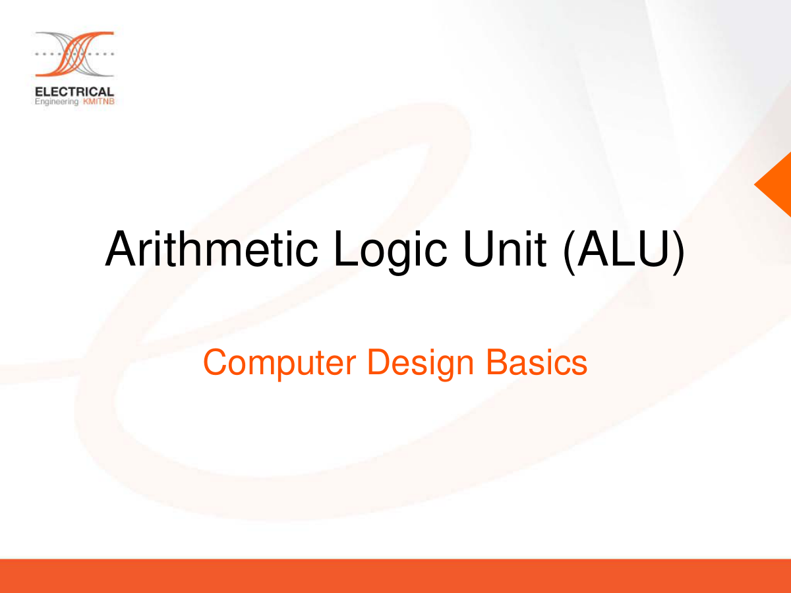
📌 อะไร (What):
สไลด์ที่ 2: สาระสำคัญเรื่อง 03. micro2_ALU.pdf — การออกแบบวงจรคำนวณและลอจิก (ALU 4-bit) และ Status Flags (เนื้อหาหลัก: Arithmetic Logic Unit (ALU) Computer Design Basics)
❓ ทำไม (Why):
การเข้าใจเนื้อหาในสไลด์ที่ 2 มีความสำคัญอย่างยิ่งในการสอบวิชา Embedded System เพื่อวิเคราะห์สถาปัตยกรรมและนำไปใช้ออกแบบฮาร์ดแวร์/เฟิร์มแวร์จริง
⚙️ ยังไง (How):
การทำงานในสไลด์ที่ 2 ประมวลผลผ่านสัญญาณดิจิทัล สัญญาณนาฬิกา (Clock) และโครงสร้างรีจิสเตอร์/บัสภายในระบบอย่างเป็นลำดับขั้นตอน
💡 เฉลยคำตอบประเด็นประจำสไลด์ (Slide Question Answer):
คำตอบสำหรับประเด็นในสไลด์ที่ 2: การวิเคราะห์มโนทัศน์และข้อกำหนดเชิงวิศวกรรมของหัวข้อนี้ ช่วยให้เข้าใจหลักการทำงานและแก้โจทย์คำนวณในข้อสอบได้อย่างถูกต้อง
สไลด์ที่ 3 จาก 33
Slide #3
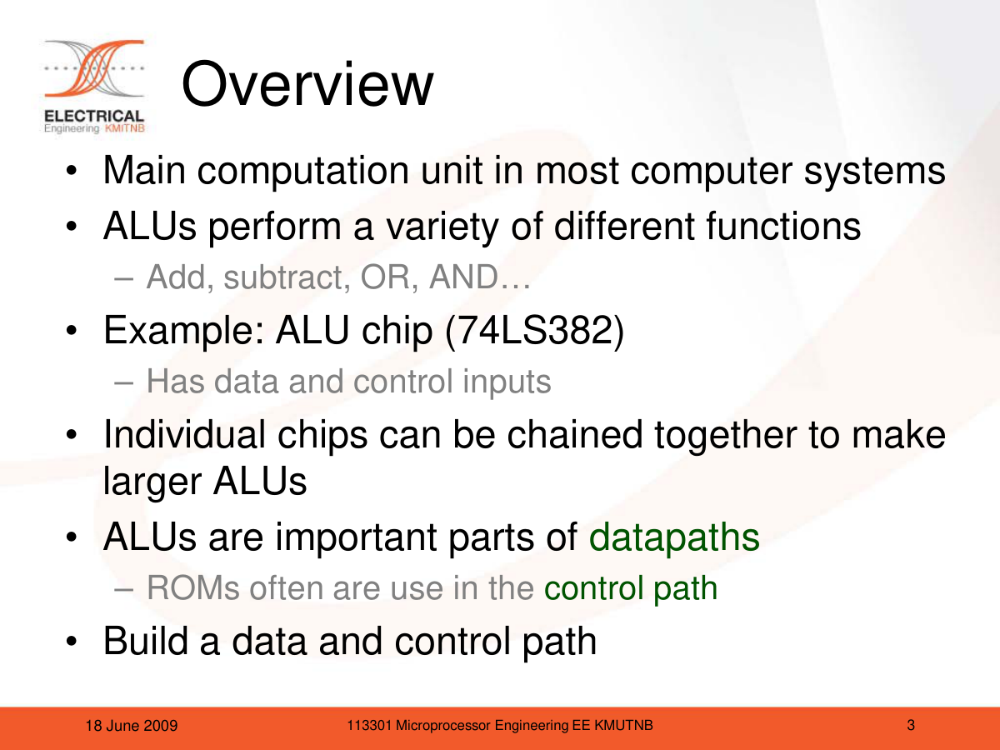
📌 อะไร (What):
สไลด์ที่ 3: สาระสำคัญเรื่อง 03. micro2_ALU.pdf — การออกแบบวงจรคำนวณและลอจิก (ALU 4-bit) และ Status Flags (เนื้อหาหลัก: Overview • Main computation unit in most computer systems • ALUs perform a variety of different functions – Add, subtract, OR, AND… • Example: ALU chi...)
❓ ทำไม (Why):
การเข้าใจเนื้อหาในสไลด์ที่ 3 มีความสำคัญอย่างยิ่งในการสอบวิชา Embedded System เพื่อวิเคราะห์สถาปัตยกรรมและนำไปใช้ออกแบบฮาร์ดแวร์/เฟิร์มแวร์จริง
⚙️ ยังไง (How):
การทำงานในสไลด์ที่ 3 ประมวลผลผ่านสัญญาณดิจิทัล สัญญาณนาฬิกา (Clock) และโครงสร้างรีจิสเตอร์/บัสภายในระบบอย่างเป็นลำดับขั้นตอน
สไลด์ที่ 4 จาก 33
Slide #4
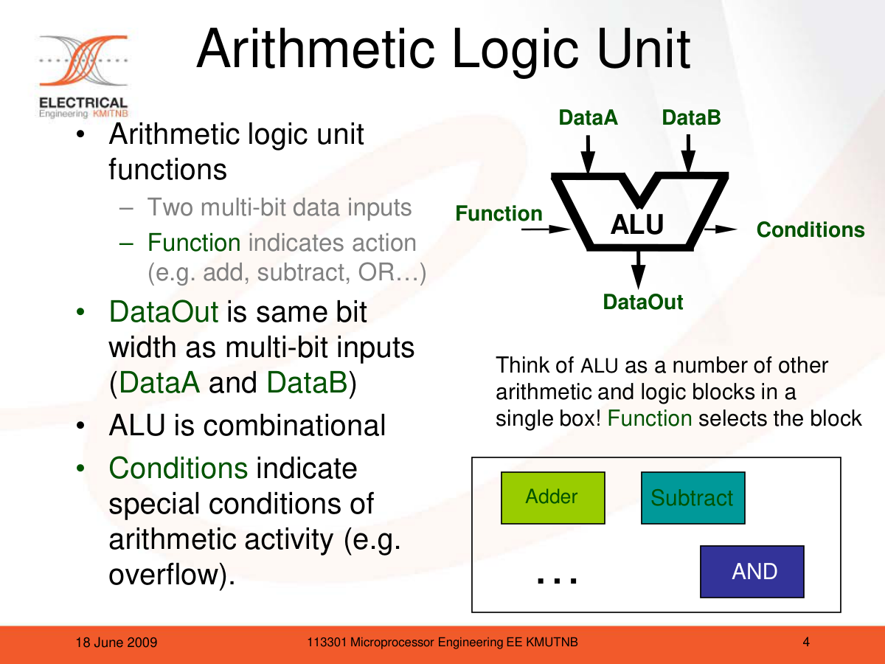
📌 อะไร (What):
สไลด์ที่ 4: สาระสำคัญเรื่อง 03. micro2_ALU.pdf — การออกแบบวงจรคำนวณและลอจิก (ALU 4-bit) และ Status Flags (เนื้อหาหลัก: Arithmetic Logic Unit • Arithmetic logic unit functions – Two multi-bit data inputs – Function indicates action (e.g. add, subtract, OR…) • DataOut ...)
❓ ทำไม (Why):
การเข้าใจเนื้อหาในสไลด์ที่ 4 มีความสำคัญอย่างยิ่งในการสอบวิชา Embedded System เพื่อวิเคราะห์สถาปัตยกรรมและนำไปใช้ออกแบบฮาร์ดแวร์/เฟิร์มแวร์จริง
⚙️ ยังไง (How):
การทำงานในสไลด์ที่ 4 ประมวลผลผ่านสัญญาณดิจิทัล สัญญาณนาฬิกา (Clock) และโครงสร้างรีจิสเตอร์/บัสภายในระบบอย่างเป็นลำดับขั้นตอน
สไลด์ที่ 5 จาก 33
Slide #5
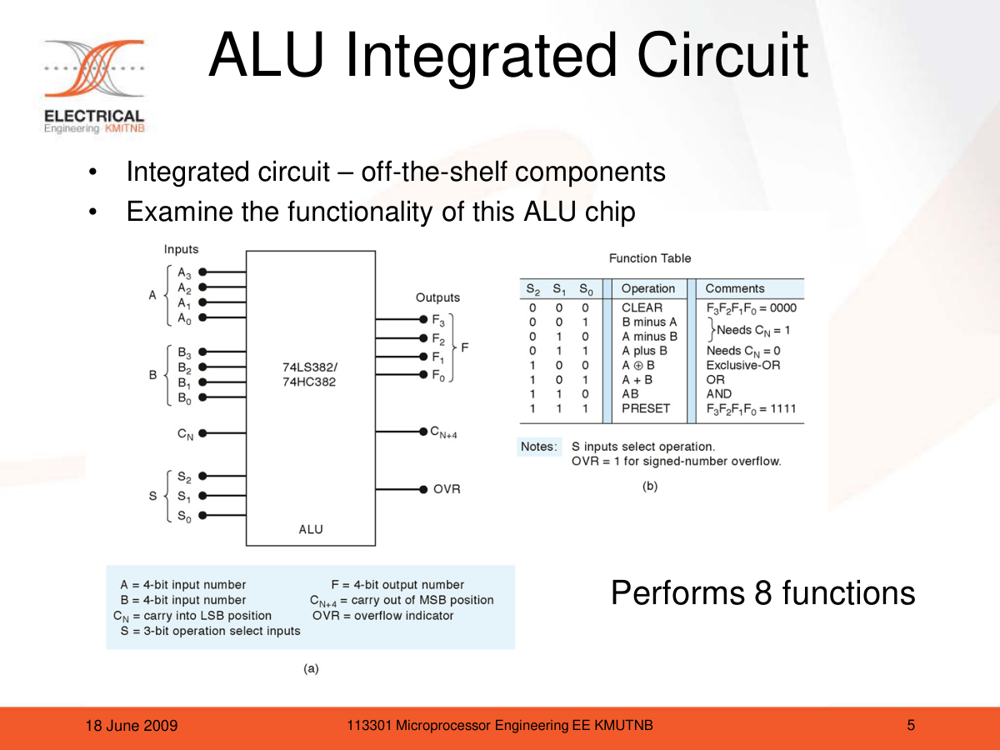
📌 อะไร (What):
สไลด์ที่ 5: สาระสำคัญเรื่อง 03. micro2_ALU.pdf — การออกแบบวงจรคำนวณและลอจิก (ALU 4-bit) และ Status Flags (เนื้อหาหลัก: ALU Integrated Circuit • Integrated circuit – off-the-shelf components • Examine the functionality of this ALU chip Performs 8 functions 18 June 2009 ...)
❓ ทำไม (Why):
การเข้าใจเนื้อหาในสไลด์ที่ 5 มีความสำคัญอย่างยิ่งในการสอบวิชา Embedded System เพื่อวิเคราะห์สถาปัตยกรรมและนำไปใช้ออกแบบฮาร์ดแวร์/เฟิร์มแวร์จริง
⚙️ ยังไง (How):
การทำงานในสไลด์ที่ 5 ประมวลผลผ่านสัญญาณดิจิทัล สัญญาณนาฬิกา (Clock) และโครงสร้างรีจิสเตอร์/บัสภายในระบบอย่างเป็นลำดับขั้นตอน
💡 เฉลยคำตอบประเด็นประจำสไลด์ (Slide Question Answer):
คำตอบสำหรับประเด็นในสไลด์ที่ 5: การวิเคราะห์มโนทัศน์และข้อกำหนดเชิงวิศวกรรมของหัวข้อนี้ ช่วยให้เข้าใจหลักการทำงานและแก้โจทย์คำนวณในข้อสอบได้อย่างถูกต้อง
สไลด์ที่ 6 จาก 33
Slide #6
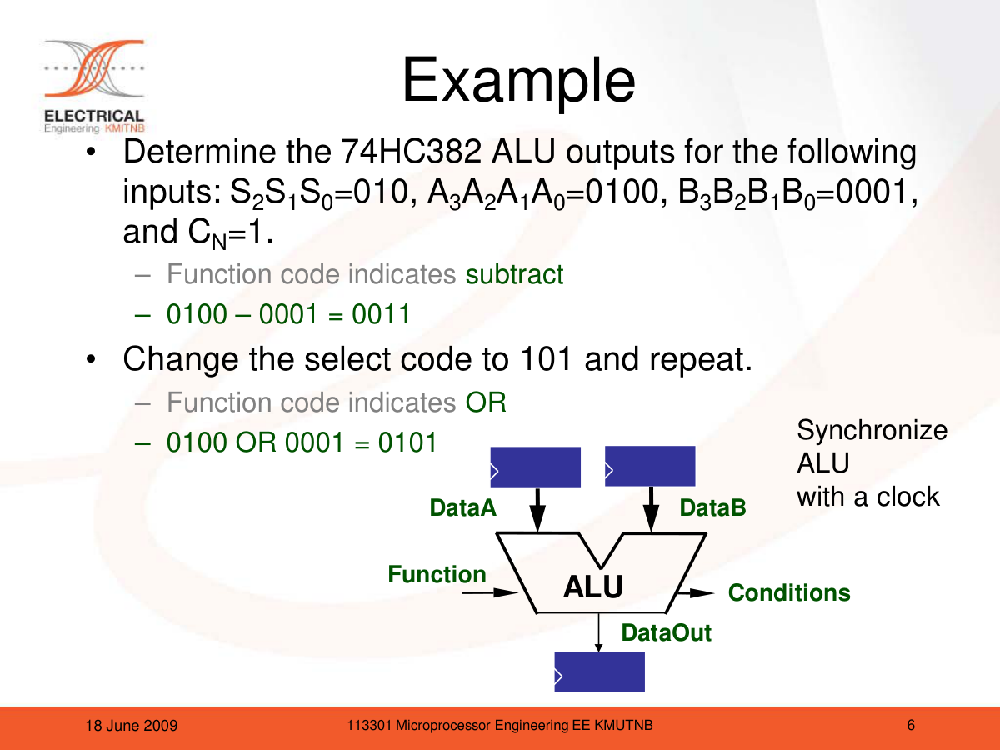
📌 อะไร (What):
สไลด์ที่ 6: สาระสำคัญเรื่อง 03. micro2_ALU.pdf — การออกแบบวงจรคำนวณและลอจิก (ALU 4-bit) และ Status Flags (เนื้อหาหลัก: Example • Determine the 74HC382 ALU outputs for the following inputs: S2S1S0=010, A3A2A1A0=0100, B3B2B1B0=0001, and CN=1. – Function code indicates ...)
❓ ทำไม (Why):
การเข้าใจเนื้อหาในสไลด์ที่ 6 มีความสำคัญอย่างยิ่งในการสอบวิชา Embedded System เพื่อวิเคราะห์สถาปัตยกรรมและนำไปใช้ออกแบบฮาร์ดแวร์/เฟิร์มแวร์จริง
⚙️ ยังไง (How):
การทำงานในสไลด์ที่ 6 ประมวลผลผ่านสัญญาณดิจิทัล สัญญาณนาฬิกา (Clock) และโครงสร้างรีจิสเตอร์/บัสภายในระบบอย่างเป็นลำดับขั้นตอน
สไลด์ที่ 7 จาก 33
Slide #7
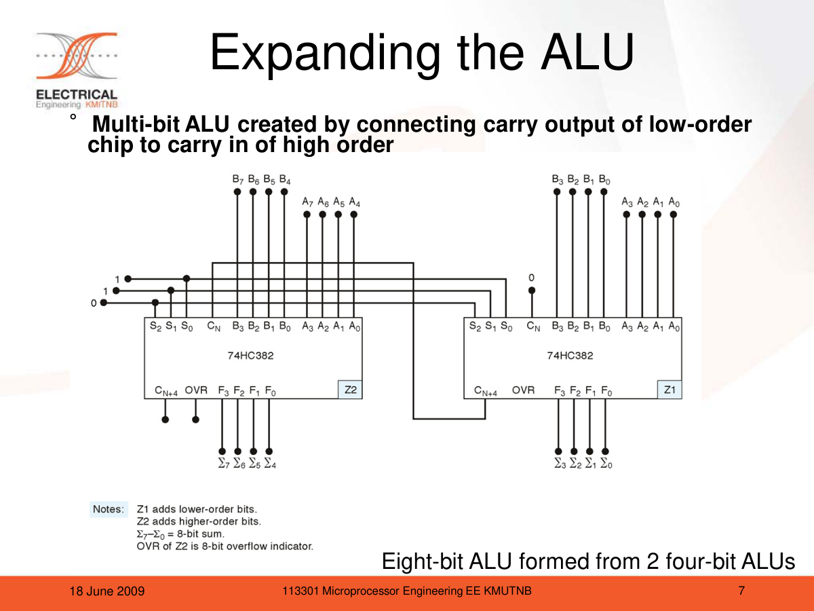
📌 อะไร (What):
สไลด์ที่ 7: สาระสำคัญเรื่อง 03. micro2_ALU.pdf — การออกแบบวงจรคำนวณและลอจิก (ALU 4-bit) และ Status Flags (เนื้อหาหลัก: Expanding the ALU °Multi-bit ALU created by connecting carry output of low-order chip to carry in of high order Eight-bit ALU formed from 2 four-bit ...)
❓ ทำไม (Why):
การเข้าใจเนื้อหาในสไลด์ที่ 7 มีความสำคัญอย่างยิ่งในการสอบวิชา Embedded System เพื่อวิเคราะห์สถาปัตยกรรมและนำไปใช้ออกแบบฮาร์ดแวร์/เฟิร์มแวร์จริง
⚙️ ยังไง (How):
การทำงานในสไลด์ที่ 7 ประมวลผลผ่านสัญญาณดิจิทัล สัญญาณนาฬิกา (Clock) และโครงสร้างรีจิสเตอร์/บัสภายในระบบอย่างเป็นลำดับขั้นตอน
สไลด์ที่ 8 จาก 33
Slide #8
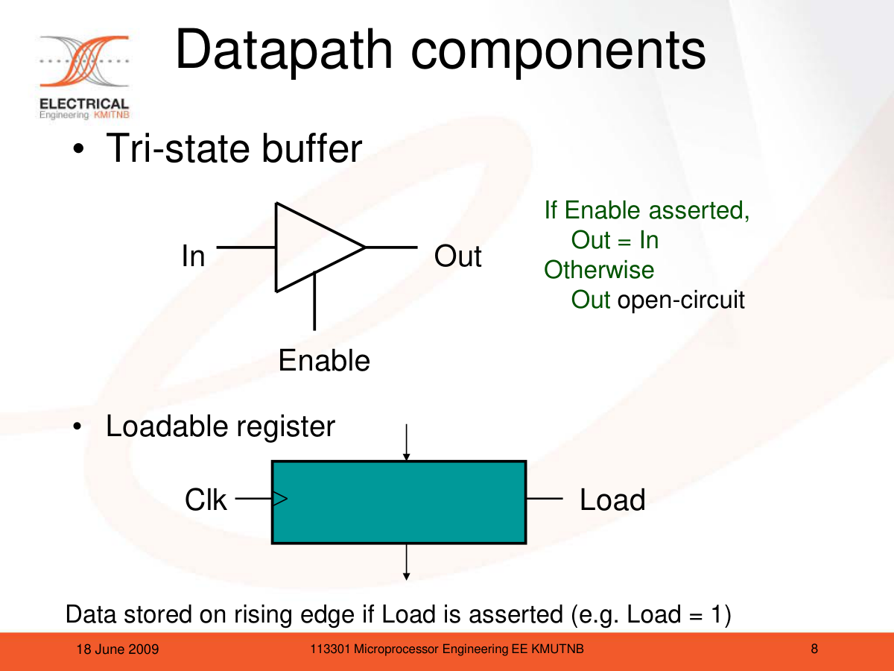
📌 อะไร (What):
สไลด์ที่ 8: สาระสำคัญเรื่อง 03. micro2_ALU.pdf — การออกแบบวงจรคำนวณและลอจิก (ALU 4-bit) และ Status Flags (เนื้อหาหลัก: Datapath components • Tri-state buffer • Loadable register In Out Enable If Enable asserted, Out = In Otherwise Out open-circuit Load Clk Data store...)
❓ ทำไม (Why):
การเข้าใจเนื้อหาในสไลด์ที่ 8 มีความสำคัญอย่างยิ่งในการสอบวิชา Embedded System เพื่อวิเคราะห์สถาปัตยกรรมและนำไปใช้ออกแบบฮาร์ดแวร์/เฟิร์มแวร์จริง
⚙️ ยังไง (How):
การทำงานในสไลด์ที่ 8 ประมวลผลผ่านสัญญาณดิจิทัล สัญญาณนาฬิกา (Clock) และโครงสร้างรีจิสเตอร์/บัสภายในระบบอย่างเป็นลำดับขั้นตอน
สไลด์ที่ 9 จาก 33
Slide #9
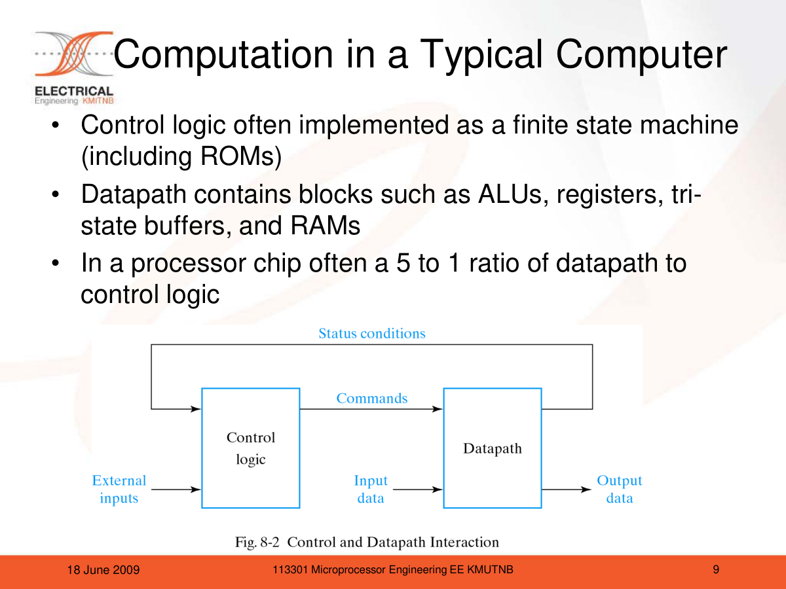
📌 อะไร (What):
สไลด์ที่ 9: สาระสำคัญเรื่อง 03. micro2_ALU.pdf — การออกแบบวงจรคำนวณและลอจิก (ALU 4-bit) และ Status Flags (เนื้อหาหลัก: Computation in a Typical Computer • Control logic often implemented as a finite state machine (including ROMs) • Datapath contains blocks such as ALU...)
❓ ทำไม (Why):
การเข้าใจเนื้อหาในสไลด์ที่ 9 มีความสำคัญอย่างยิ่งในการสอบวิชา Embedded System เพื่อวิเคราะห์สถาปัตยกรรมและนำไปใช้ออกแบบฮาร์ดแวร์/เฟิร์มแวร์จริง
⚙️ ยังไง (How):
การทำงานในสไลด์ที่ 9 ประมวลผลผ่านสัญญาณดิจิทัล สัญญาณนาฬิกา (Clock) และโครงสร้างรีจิสเตอร์/บัสภายในระบบอย่างเป็นลำดับขั้นตอน
สไลด์ที่ 10 จาก 33
Slide #10
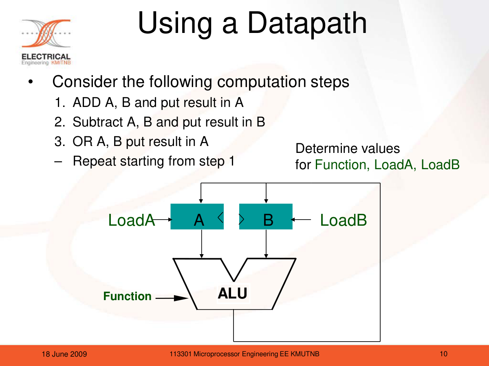
📌 อะไร (What):
สไลด์ที่ 10: สาระสำคัญเรื่อง 03. micro2_ALU.pdf — การออกแบบวงจรคำนวณและลอจิก (ALU 4-bit) และ Status Flags (เนื้อหาหลัก: Using a Datapath • Consider the following computation steps 1. ADD A, B and put result in A 2. Subtract A, B and put result in B 3. OR A, B put result...)
❓ ทำไม (Why):
การเข้าใจเนื้อหาในสไลด์ที่ 10 มีความสำคัญอย่างยิ่งในการสอบวิชา Embedded System เพื่อวิเคราะห์สถาปัตยกรรมและนำไปใช้ออกแบบฮาร์ดแวร์/เฟิร์มแวร์จริง
⚙️ ยังไง (How):
การทำงานในสไลด์ที่ 10 ประมวลผลผ่านสัญญาณดิจิทัล สัญญาณนาฬิกา (Clock) และโครงสร้างรีจิสเตอร์/บัสภายในระบบอย่างเป็นลำดับขั้นตอน
💡 เฉลยคำตอบประเด็นประจำสไลด์ (Slide Question Answer):
คำตอบสำหรับประเด็นในสไลด์ที่ 10: การวิเคราะห์มโนทัศน์และข้อกำหนดเชิงวิศวกรรมของหัวข้อนี้ ช่วยให้เข้าใจหลักการทำงานและแก้โจทย์คำนวณในข้อสอบได้อย่างถูกต้อง
🔌 ผังจำลองการไหลของข้อมูลฮาร์ดแวร์สไลด์ที่ 10 (SVG Interactive Animation)
สไลด์ที่ 11 จาก 33
Slide #11
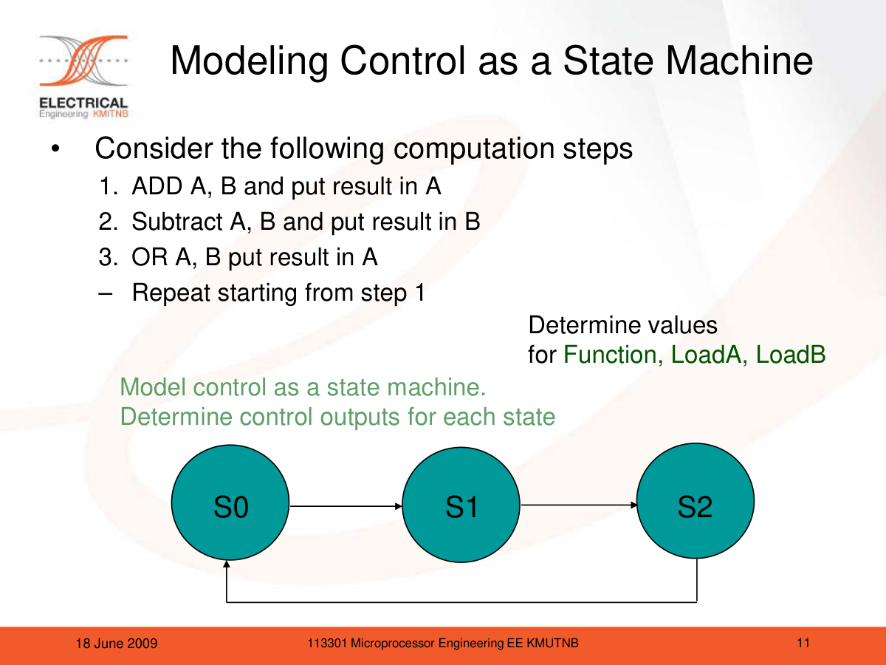
📌 อะไร (What):
สไลด์ที่ 11: สาระสำคัญเรื่อง 03. micro2_ALU.pdf — การออกแบบวงจรคำนวณและลอจิก (ALU 4-bit) และ Status Flags (เนื้อหาหลัก: Modeling Control as a State Machine • Consider the following computation steps 1. ADD A, B and put result in A 2. Subtract A, B and put result in B 3....)
❓ ทำไม (Why):
การเข้าใจเนื้อหาในสไลด์ที่ 11 มีความสำคัญอย่างยิ่งในการสอบวิชา Embedded System เพื่อวิเคราะห์สถาปัตยกรรมและนำไปใช้ออกแบบฮาร์ดแวร์/เฟิร์มแวร์จริง
⚙️ ยังไง (How):
การทำงานในสไลด์ที่ 11 ประมวลผลผ่านสัญญาณดิจิทัล สัญญาณนาฬิกา (Clock) และโครงสร้างรีจิสเตอร์/บัสภายในระบบอย่างเป็นลำดับขั้นตอน
สไลด์ที่ 12 จาก 33
Slide #12
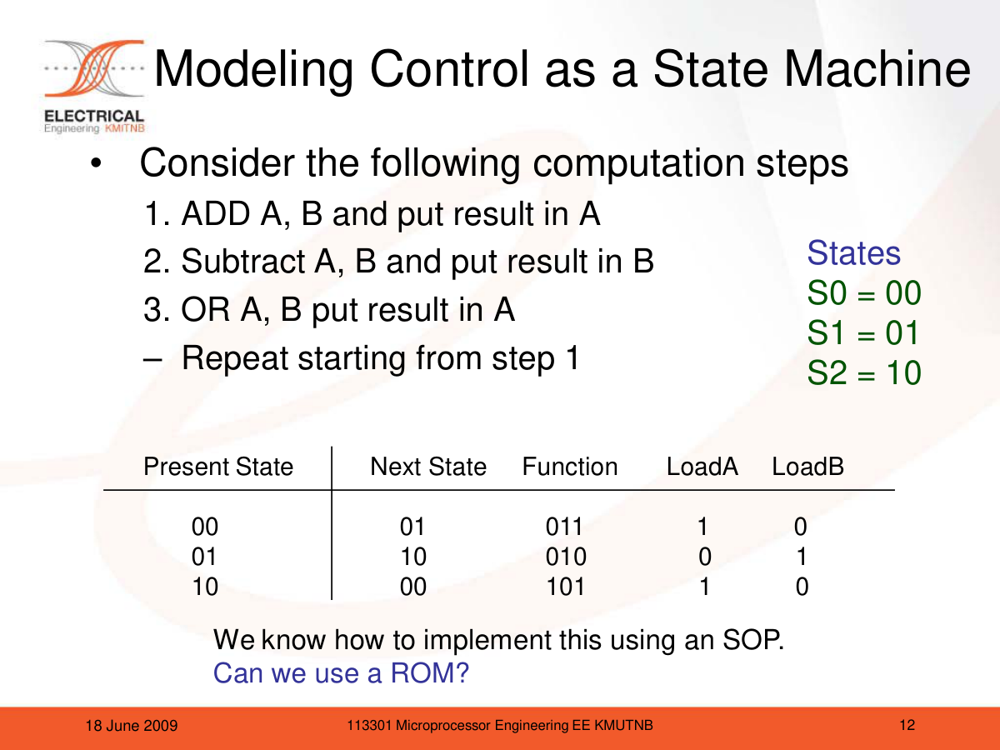
📌 อะไร (What):
สไลด์ที่ 12: สาระสำคัญเรื่อง 03. micro2_ALU.pdf — การออกแบบวงจรคำนวณและลอจิก (ALU 4-bit) และ Status Flags (เนื้อหาหลัก: Modeling Control as a State Machine • Consider the following computation steps 1. ADD A, B and put result in A 2. Subtract A, B and put result in B 3....)
❓ ทำไม (Why):
การเข้าใจเนื้อหาในสไลด์ที่ 12 มีความสำคัญอย่างยิ่งในการสอบวิชา Embedded System เพื่อวิเคราะห์สถาปัตยกรรมและนำไปใช้ออกแบบฮาร์ดแวร์/เฟิร์มแวร์จริง
⚙️ ยังไง (How):
การทำงานในสไลด์ที่ 12 ประมวลผลผ่านสัญญาณดิจิทัล สัญญาณนาฬิกา (Clock) และโครงสร้างรีจิสเตอร์/บัสภายในระบบอย่างเป็นลำดับขั้นตอน
สไลด์ที่ 13 จาก 33
Slide #13
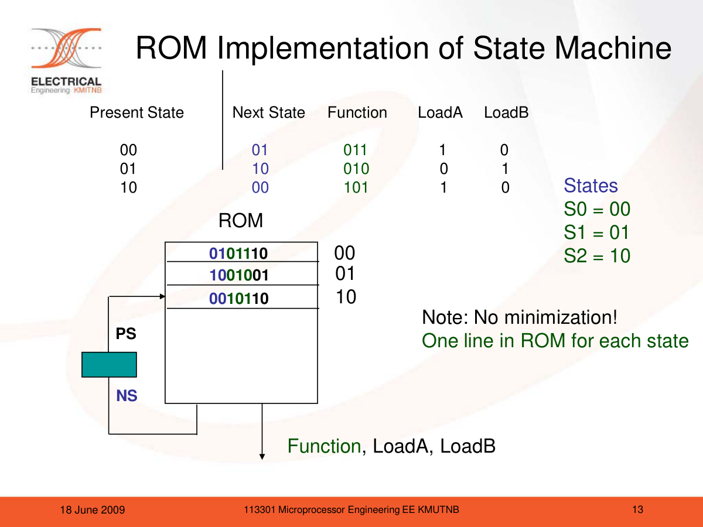
📌 อะไร (What):
สไลด์ที่ 13: สาระสำคัญเรื่อง 03. micro2_ALU.pdf — การออกแบบวงจรคำนวณและลอจิก (ALU 4-bit) และ Status Flags (เนื้อหาหลัก: ROM Implementation of State Machine States S0 = 00 S1 = 01 S2 = 10 Present State Next State Function LoadA LoadB 00 ...)
❓ ทำไม (Why):
การเข้าใจเนื้อหาในสไลด์ที่ 13 มีความสำคัญอย่างยิ่งในการสอบวิชา Embedded System เพื่อวิเคราะห์สถาปัตยกรรมและนำไปใช้ออกแบบฮาร์ดแวร์/เฟิร์มแวร์จริง
⚙️ ยังไง (How):
การทำงานในสไลด์ที่ 13 ประมวลผลผ่านสัญญาณดิจิทัล สัญญาณนาฬิกา (Clock) และโครงสร้างรีจิสเตอร์/บัสภายในระบบอย่างเป็นลำดับขั้นตอน
สไลด์ที่ 14 จาก 33
Slide #14
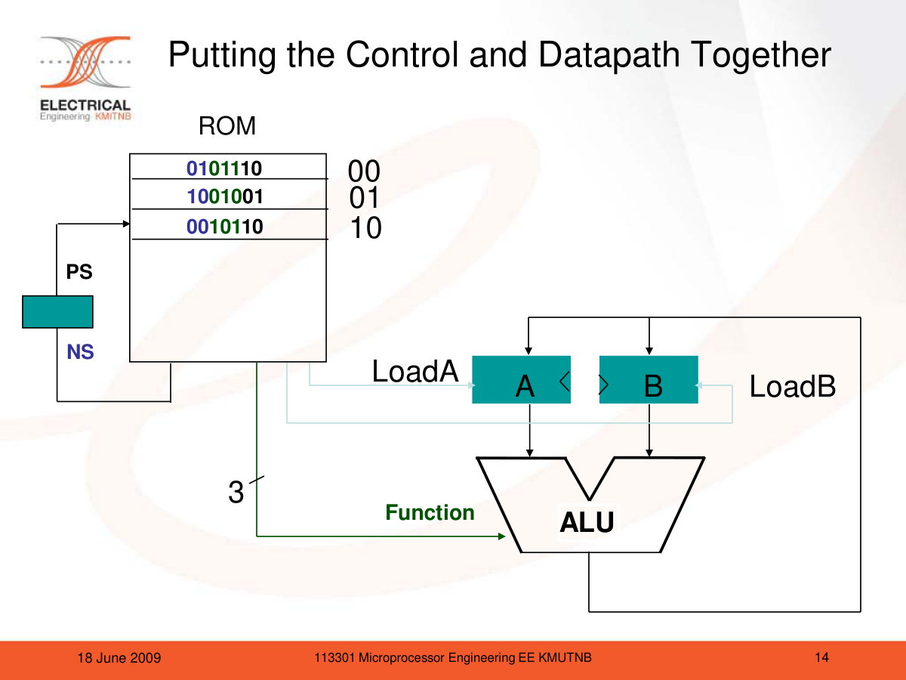
📌 อะไร (What):
สไลด์ที่ 14: สาระสำคัญเรื่อง 03. micro2_ALU.pdf — การออกแบบวงจรคำนวณและลอจิก (ALU 4-bit) และ Status Flags (เนื้อหาหลัก: Putting the Control and Datapath Together PS NS 0101110 1001001 0010110 00 01 10 ROM Function LoadA A B LoadB ALU 3 18 June 2009 14 113301 Microproces...)
❓ ทำไม (Why):
การเข้าใจเนื้อหาในสไลด์ที่ 14 มีความสำคัญอย่างยิ่งในการสอบวิชา Embedded System เพื่อวิเคราะห์สถาปัตยกรรมและนำไปใช้ออกแบบฮาร์ดแวร์/เฟิร์มแวร์จริง
⚙️ ยังไง (How):
การทำงานในสไลด์ที่ 14 ประมวลผลผ่านสัญญาณดิจิทัล สัญญาณนาฬิกา (Clock) และโครงสร้างรีจิสเตอร์/บัสภายในระบบอย่างเป็นลำดับขั้นตอน
สไลด์ที่ 15 จาก 33
Slide #15
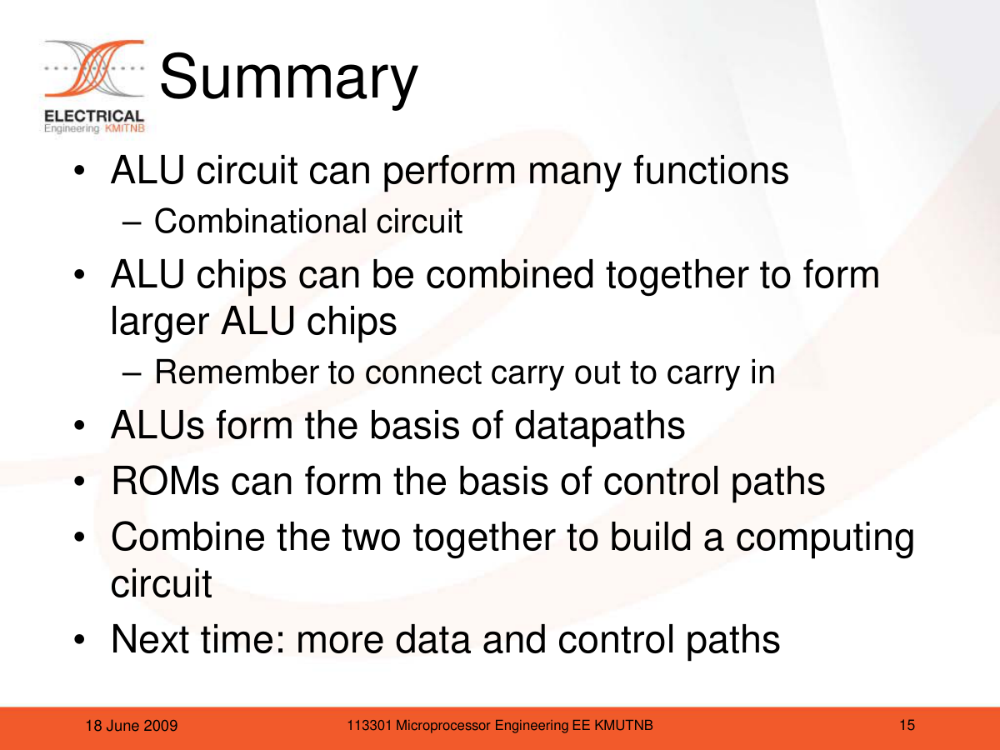
📌 อะไร (What):
สไลด์ที่ 15: สาระสำคัญเรื่อง 03. micro2_ALU.pdf — การออกแบบวงจรคำนวณและลอจิก (ALU 4-bit) และ Status Flags (เนื้อหาหลัก: Summary • ALU circuit can perform many functions – Combinational circuit • ALU chips can be combined together to form larger ALU chips – Remember to ...)
❓ ทำไม (Why):
การเข้าใจเนื้อหาในสไลด์ที่ 15 มีความสำคัญอย่างยิ่งในการสอบวิชา Embedded System เพื่อวิเคราะห์สถาปัตยกรรมและนำไปใช้ออกแบบฮาร์ดแวร์/เฟิร์มแวร์จริง
⚙️ ยังไง (How):
การทำงานในสไลด์ที่ 15 ประมวลผลผ่านสัญญาณดิจิทัล สัญญาณนาฬิกา (Clock) และโครงสร้างรีจิสเตอร์/บัสภายในระบบอย่างเป็นลำดับขั้นตอน
💡 เฉลยคำตอบประเด็นประจำสไลด์ (Slide Question Answer):
คำตอบสำหรับประเด็นในสไลด์ที่ 15: การวิเคราะห์มโนทัศน์และข้อกำหนดเชิงวิศวกรรมของหัวข้อนี้ ช่วยให้เข้าใจหลักการทำงานและแก้โจทย์คำนวณในข้อสอบได้อย่างถูกต้อง
สไลด์ที่ 16 จาก 33
Slide #16
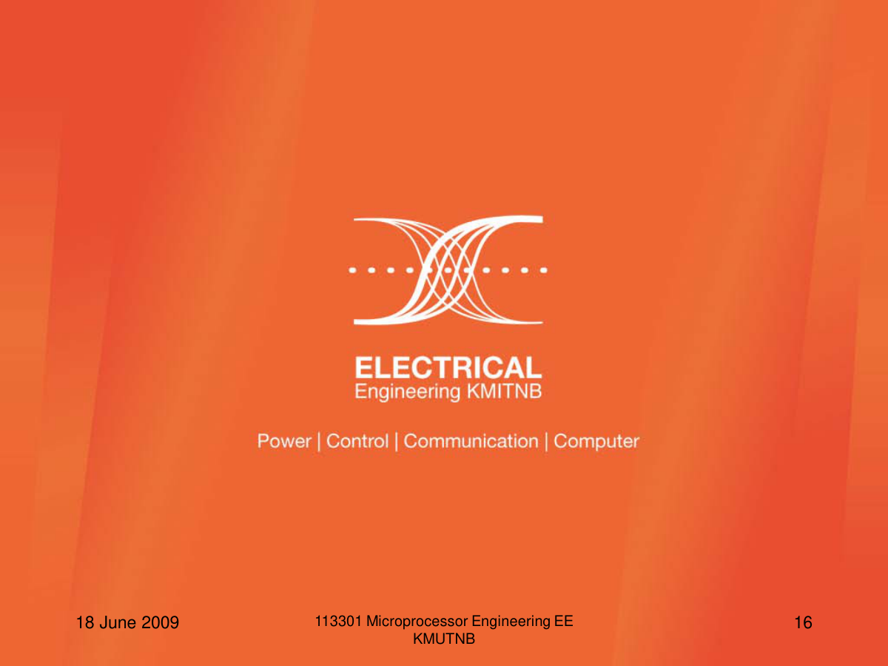
📌 อะไร (What):
สไลด์ที่ 16: สาระสำคัญเรื่อง 03. micro2_ALU.pdf — การออกแบบวงจรคำนวณและลอจิก (ALU 4-bit) และ Status Flags (เนื้อหาหลัก: 18 June 2009 16 113301 Microprocessor Engineering EE KMUTNB)
❓ ทำไม (Why):
การเข้าใจเนื้อหาในสไลด์ที่ 16 มีความสำคัญอย่างยิ่งในการสอบวิชา Embedded System เพื่อวิเคราะห์สถาปัตยกรรมและนำไปใช้ออกแบบฮาร์ดแวร์/เฟิร์มแวร์จริง
⚙️ ยังไง (How):
การทำงานในสไลด์ที่ 16 ประมวลผลผ่านสัญญาณดิจิทัล สัญญาณนาฬิกา (Clock) และโครงสร้างรีจิสเตอร์/บัสภายในระบบอย่างเป็นลำดับขั้นตอน
สไลด์ที่ 17 จาก 33
Slide #17
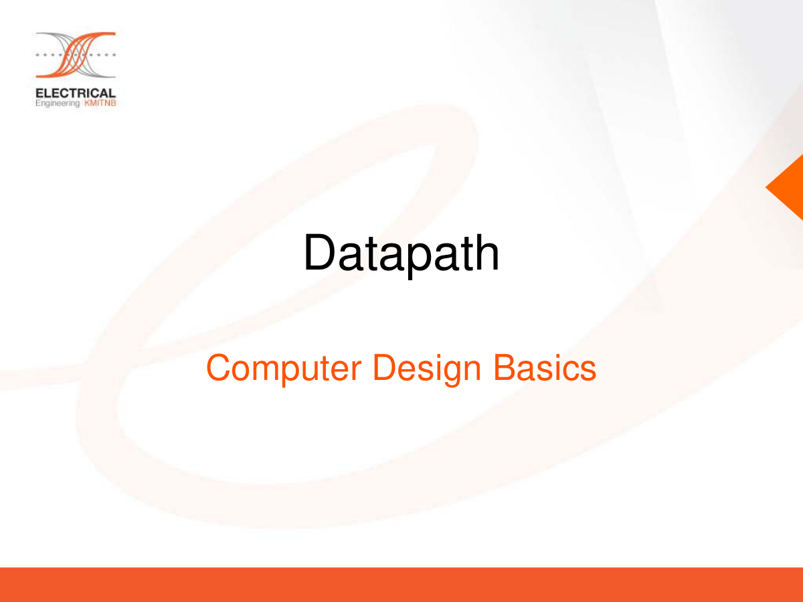
📌 อะไร (What):
สไลด์ที่ 17: สาระสำคัญเรื่อง 03. micro2_ALU.pdf — การออกแบบวงจรคำนวณและลอจิก (ALU 4-bit) และ Status Flags (เนื้อหาหลัก: Datapath Computer Design Basics)
❓ ทำไม (Why):
การเข้าใจเนื้อหาในสไลด์ที่ 17 มีความสำคัญอย่างยิ่งในการสอบวิชา Embedded System เพื่อวิเคราะห์สถาปัตยกรรมและนำไปใช้ออกแบบฮาร์ดแวร์/เฟิร์มแวร์จริง
⚙️ ยังไง (How):
การทำงานในสไลด์ที่ 17 ประมวลผลผ่านสัญญาณดิจิทัล สัญญาณนาฬิกา (Clock) และโครงสร้างรีจิสเตอร์/บัสภายในระบบอย่างเป็นลำดับขั้นตอน
สไลด์ที่ 18 จาก 33
Slide #18
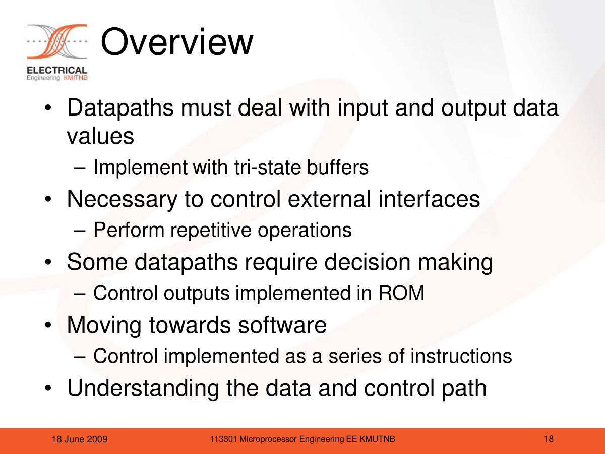
📌 อะไร (What):
สไลด์ที่ 18: สาระสำคัญเรื่อง 03. micro2_ALU.pdf — การออกแบบวงจรคำนวณและลอจิก (ALU 4-bit) และ Status Flags (เนื้อหาหลัก: Overview • Datapaths must deal with input and output data values – Implement with tri-state buffers • Necessary to control external interfaces – Perf...)
❓ ทำไม (Why):
การเข้าใจเนื้อหาในสไลด์ที่ 18 มีความสำคัญอย่างยิ่งในการสอบวิชา Embedded System เพื่อวิเคราะห์สถาปัตยกรรมและนำไปใช้ออกแบบฮาร์ดแวร์/เฟิร์มแวร์จริง
⚙️ ยังไง (How):
การทำงานในสไลด์ที่ 18 ประมวลผลผ่านสัญญาณดิจิทัล สัญญาณนาฬิกา (Clock) และโครงสร้างรีจิสเตอร์/บัสภายในระบบอย่างเป็นลำดับขั้นตอน
สไลด์ที่ 19 จาก 33
Slide #19
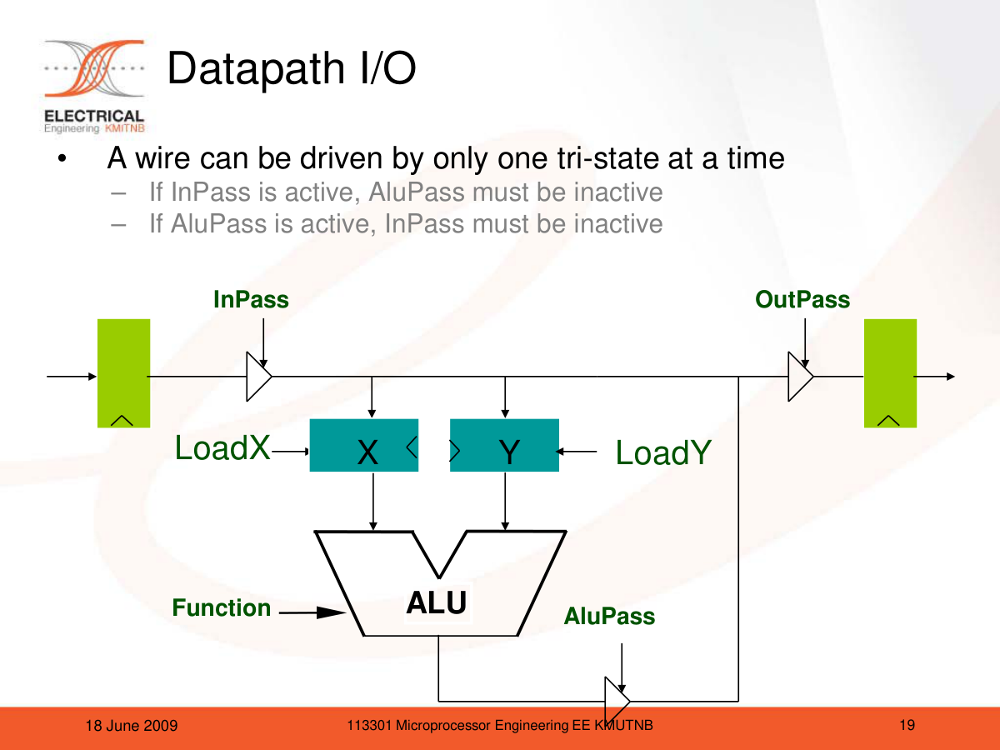
📌 อะไร (What):
สไลด์ที่ 19: สาระสำคัญเรื่อง 03. micro2_ALU.pdf — การออกแบบวงจรคำนวณและลอจิก (ALU 4-bit) และ Status Flags (เนื้อหาหลัก: Datapath I/O • A wire can be driven by only one tri-state at a time – If InPass is active, AluPass must be inactive – If AluPass is active, InPass mus...)
❓ ทำไม (Why):
การเข้าใจเนื้อหาในสไลด์ที่ 19 มีความสำคัญอย่างยิ่งในการสอบวิชา Embedded System เพื่อวิเคราะห์สถาปัตยกรรมและนำไปใช้ออกแบบฮาร์ดแวร์/เฟิร์มแวร์จริง
⚙️ ยังไง (How):
การทำงานในสไลด์ที่ 19 ประมวลผลผ่านสัญญาณดิจิทัล สัญญาณนาฬิกา (Clock) และโครงสร้างรีจิสเตอร์/บัสภายในระบบอย่างเป็นลำดับขั้นตอน
สไลด์ที่ 20 จาก 33
Slide #20
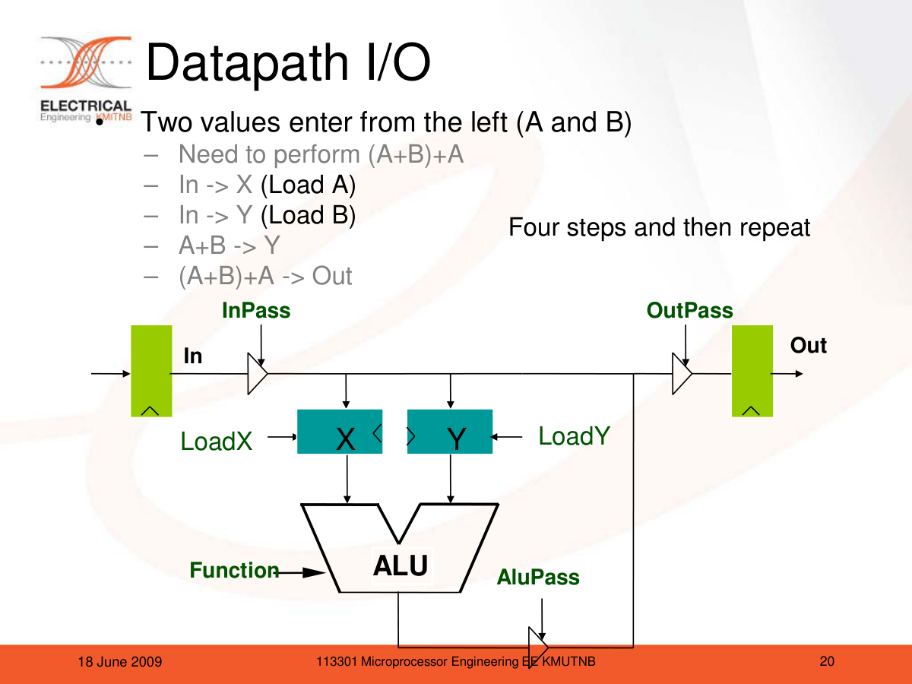
📌 อะไร (What):
สไลด์ที่ 20: สาระสำคัญเรื่อง 03. micro2_ALU.pdf — การออกแบบวงจรคำนวณและลอจิก (ALU 4-bit) และ Status Flags (เนื้อหาหลัก: Datapath I/O • Two values enter from the left (A and B) – Need to perform (A+B)+A – In -> X (Load A) – In -> Y (Load B) – A+B -> Y – (A+B)+A -> Out Fu...)
❓ ทำไม (Why):
การเข้าใจเนื้อหาในสไลด์ที่ 20 มีความสำคัญอย่างยิ่งในการสอบวิชา Embedded System เพื่อวิเคราะห์สถาปัตยกรรมและนำไปใช้ออกแบบฮาร์ดแวร์/เฟิร์มแวร์จริง
⚙️ ยังไง (How):
การทำงานในสไลด์ที่ 20 ประมวลผลผ่านสัญญาณดิจิทัล สัญญาณนาฬิกา (Clock) และโครงสร้างรีจิสเตอร์/บัสภายในระบบอย่างเป็นลำดับขั้นตอน
💡 เฉลยคำตอบประเด็นประจำสไลด์ (Slide Question Answer):
คำตอบสำหรับประเด็นในสไลด์ที่ 20: การวิเคราะห์มโนทัศน์และข้อกำหนดเชิงวิศวกรรมของหัวข้อนี้ ช่วยให้เข้าใจหลักการทำงานและแก้โจทย์คำนวณในข้อสอบได้อย่างถูกต้อง
🔌 ผังจำลองการไหลของข้อมูลฮาร์ดแวร์สไลด์ที่ 20 (SVG Interactive Animation)
สไลด์ที่ 21 จาก 33
Slide #21
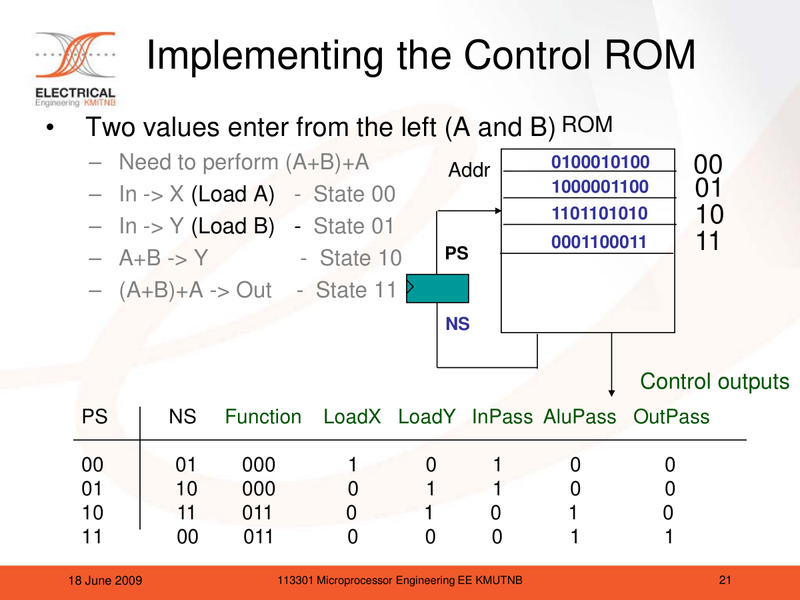
📌 อะไร (What):
สไลด์ที่ 21: สาระสำคัญเรื่อง 03. micro2_ALU.pdf — การออกแบบวงจรคำนวณและลอจิก (ALU 4-bit) และ Status Flags (เนื้อหาหลัก: Implementing the Control ROM • Two values enter from the left (A and B) – Need to perform (A+B)+A – In -> X (Load A) - State 00 – In -> Y (Load B) -...)
❓ ทำไม (Why):
การเข้าใจเนื้อหาในสไลด์ที่ 21 มีความสำคัญอย่างยิ่งในการสอบวิชา Embedded System เพื่อวิเคราะห์สถาปัตยกรรมและนำไปใช้ออกแบบฮาร์ดแวร์/เฟิร์มแวร์จริง
⚙️ ยังไง (How):
การทำงานในสไลด์ที่ 21 ประมวลผลผ่านสัญญาณดิจิทัล สัญญาณนาฬิกา (Clock) และโครงสร้างรีจิสเตอร์/บัสภายในระบบอย่างเป็นลำดับขั้นตอน
สไลด์ที่ 22 จาก 33
Slide #22
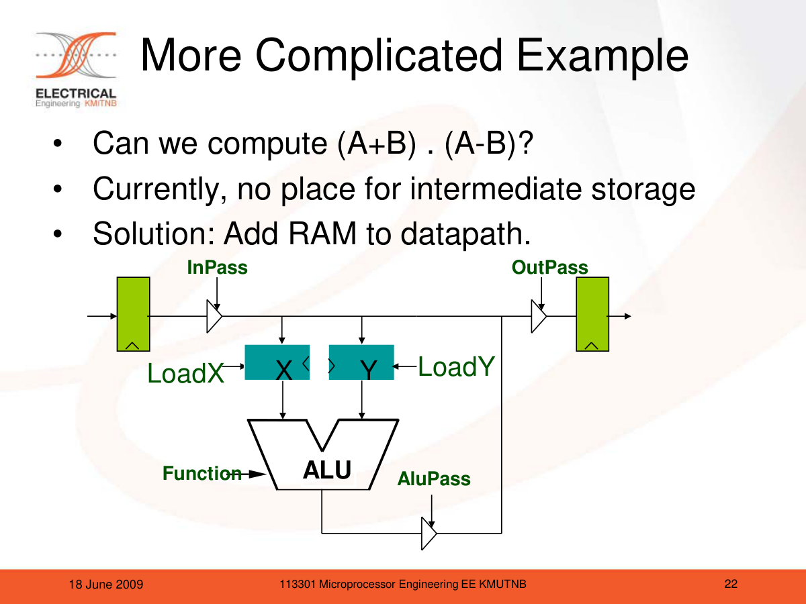
📌 อะไร (What):
สไลด์ที่ 22: สาระสำคัญเรื่อง 03. micro2_ALU.pdf — การออกแบบวงจรคำนวณและลอจิก (ALU 4-bit) และ Status Flags (เนื้อหาหลัก: More Complicated Example • Can we compute (A+B) . (A-B)? • Currently, no place for intermediate storage • Solution: Add RAM to datapath. Function X Y ...)
❓ ทำไม (Why):
การเข้าใจเนื้อหาในสไลด์ที่ 22 มีความสำคัญอย่างยิ่งในการสอบวิชา Embedded System เพื่อวิเคราะห์สถาปัตยกรรมและนำไปใช้ออกแบบฮาร์ดแวร์/เฟิร์มแวร์จริง
⚙️ ยังไง (How):
การทำงานในสไลด์ที่ 22 ประมวลผลผ่านสัญญาณดิจิทัล สัญญาณนาฬิกา (Clock) และโครงสร้างรีจิสเตอร์/บัสภายในระบบอย่างเป็นลำดับขั้นตอน
สไลด์ที่ 23 จาก 33
Slide #23
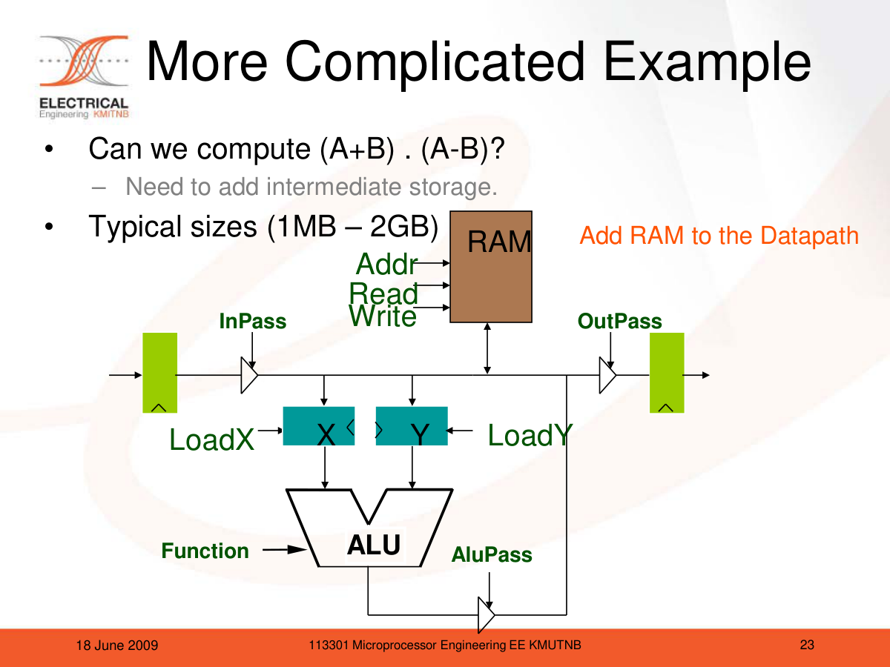
📌 อะไร (What):
สไลด์ที่ 23: สาระสำคัญเรื่อง 03. micro2_ALU.pdf — การออกแบบวงจรคำนวณและลอจิก (ALU 4-bit) และ Status Flags (เนื้อหาหลัก: More Complicated Example • Can we compute (A+B) . (A-B)? – Need to add intermediate storage. • Typical sizes (1MB – 2GB) Function X Y LoadY LoadX ALU ...)
❓ ทำไม (Why):
การเข้าใจเนื้อหาในสไลด์ที่ 23 มีความสำคัญอย่างยิ่งในการสอบวิชา Embedded System เพื่อวิเคราะห์สถาปัตยกรรมและนำไปใช้ออกแบบฮาร์ดแวร์/เฟิร์มแวร์จริง
⚙️ ยังไง (How):
การทำงานในสไลด์ที่ 23 ประมวลผลผ่านสัญญาณดิจิทัล สัญญาณนาฬิกา (Clock) และโครงสร้างรีจิสเตอร์/บัสภายในระบบอย่างเป็นลำดับขั้นตอน
สไลด์ที่ 24 จาก 33
Slide #24
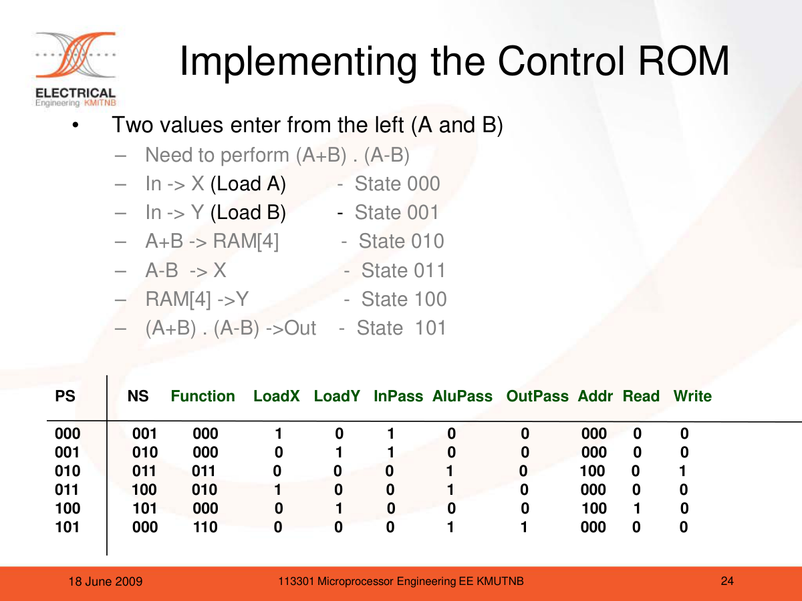
📌 อะไร (What):
สไลด์ที่ 24: สาระสำคัญเรื่อง 03. micro2_ALU.pdf — การออกแบบวงจรคำนวณและลอจิก (ALU 4-bit) และ Status Flags (เนื้อหาหลัก: Implementing the Control ROM • Two values enter from the left (A and B) – Need to perform (A+B) . (A-B) – In -> X (Load A) - State 000 – In -> Y (Load...)
❓ ทำไม (Why):
การเข้าใจเนื้อหาในสไลด์ที่ 24 มีความสำคัญอย่างยิ่งในการสอบวิชา Embedded System เพื่อวิเคราะห์สถาปัตยกรรมและนำไปใช้ออกแบบฮาร์ดแวร์/เฟิร์มแวร์จริง
⚙️ ยังไง (How):
การทำงานในสไลด์ที่ 24 ประมวลผลผ่านสัญญาณดิจิทัล สัญญาณนาฬิกา (Clock) และโครงสร้างรีจิสเตอร์/บัสภายในระบบอย่างเป็นลำดับขั้นตอน
สไลด์ที่ 25 จาก 33
Slide #25
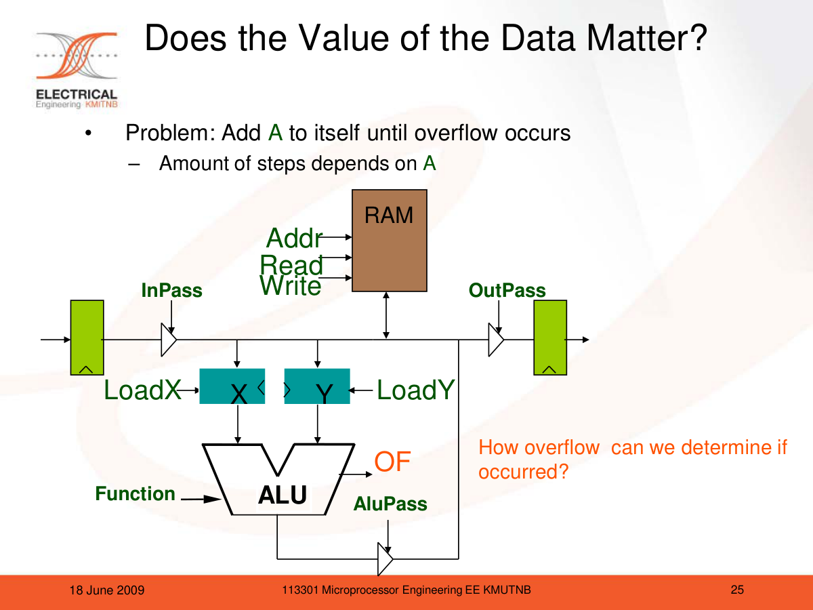
📌 อะไร (What):
สไลด์ที่ 25: สาระสำคัญเรื่อง 03. micro2_ALU.pdf — การออกแบบวงจรคำนวณและลอจิก (ALU 4-bit) และ Status Flags (เนื้อหาหลัก: Does the Value of the Data Matter? • Problem: Add A to itself until overflow occurs – Amount of steps depends on A Function X Y LoadY LoadX ALU InPass...)
❓ ทำไม (Why):
การเข้าใจเนื้อหาในสไลด์ที่ 25 มีความสำคัญอย่างยิ่งในการสอบวิชา Embedded System เพื่อวิเคราะห์สถาปัตยกรรมและนำไปใช้ออกแบบฮาร์ดแวร์/เฟิร์มแวร์จริง
⚙️ ยังไง (How):
การทำงานในสไลด์ที่ 25 ประมวลผลผ่านสัญญาณดิจิทัล สัญญาณนาฬิกา (Clock) และโครงสร้างรีจิสเตอร์/บัสภายในระบบอย่างเป็นลำดับขั้นตอน
💡 เฉลยคำตอบประเด็นประจำสไลด์ (Slide Question Answer):
คำตอบสำหรับประเด็นในสไลด์ที่ 25: การวิเคราะห์มโนทัศน์และข้อกำหนดเชิงวิศวกรรมของหัวข้อนี้ ช่วยให้เข้าใจหลักการทำงานและแก้โจทย์คำนวณในข้อสอบได้อย่างถูกต้อง
สไลด์ที่ 26 จาก 33
Slide #26
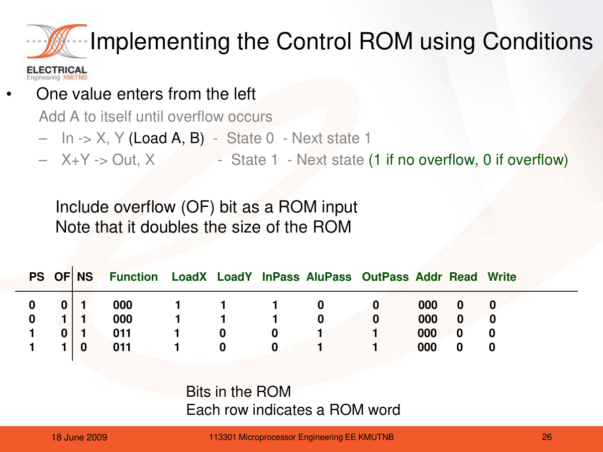
📌 อะไร (What):
สไลด์ที่ 26: สาระสำคัญเรื่อง 03. micro2_ALU.pdf — การออกแบบวงจรคำนวณและลอจิก (ALU 4-bit) และ Status Flags (เนื้อหาหลัก: Implementing the Control ROM using Conditions • One value enters from the left Add A to itself until overflow occurs – In -> X, Y (Load A, B) - State ...)
❓ ทำไม (Why):
การเข้าใจเนื้อหาในสไลด์ที่ 26 มีความสำคัญอย่างยิ่งในการสอบวิชา Embedded System เพื่อวิเคราะห์สถาปัตยกรรมและนำไปใช้ออกแบบฮาร์ดแวร์/เฟิร์มแวร์จริง
⚙️ ยังไง (How):
การทำงานในสไลด์ที่ 26 ประมวลผลผ่านสัญญาณดิจิทัล สัญญาณนาฬิกา (Clock) และโครงสร้างรีจิสเตอร์/บัสภายในระบบอย่างเป็นลำดับขั้นตอน
สไลด์ที่ 27 จาก 33
Slide #27
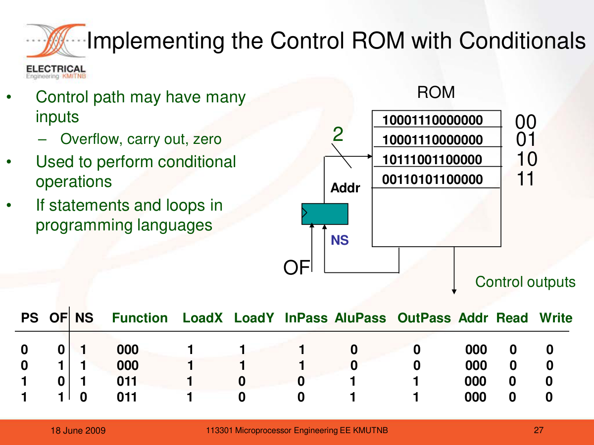
📌 อะไร (What):
สไลด์ที่ 27: สาระสำคัญเรื่อง 03. micro2_ALU.pdf — การออกแบบวงจรคำนวณและลอจิก (ALU 4-bit) และ Status Flags (เนื้อหาหลัก: Implementing the Control ROM with Conditionals • Control path may have many inputs – Overflow, carry out, zero • Used to perform conditional operati...)
❓ ทำไม (Why):
การเข้าใจเนื้อหาในสไลด์ที่ 27 มีความสำคัญอย่างยิ่งในการสอบวิชา Embedded System เพื่อวิเคราะห์สถาปัตยกรรมและนำไปใช้ออกแบบฮาร์ดแวร์/เฟิร์มแวร์จริง
⚙️ ยังไง (How):
การทำงานในสไลด์ที่ 27 ประมวลผลผ่านสัญญาณดิจิทัล สัญญาณนาฬิกา (Clock) และโครงสร้างรีจิสเตอร์/บัสภายในระบบอย่างเป็นลำดับขั้นตอน
สไลด์ที่ 28 จาก 33
Slide #28
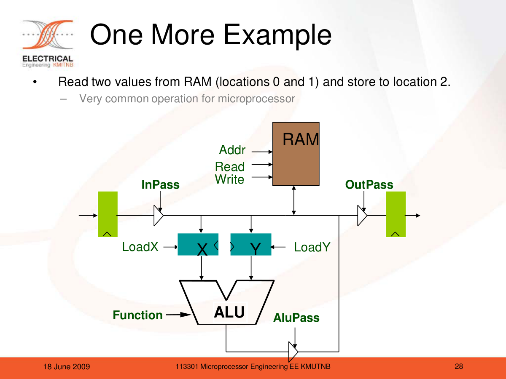
📌 อะไร (What):
สไลด์ที่ 28: สาระสำคัญเรื่อง 03. micro2_ALU.pdf — การออกแบบวงจรคำนวณและลอจิก (ALU 4-bit) และ Status Flags (เนื้อหาหลัก: One More Example • Read two values from RAM (locations 0 and 1) and store to location 2. – Very common operation for microprocessor Function X Y LoadY...)
❓ ทำไม (Why):
การเข้าใจเนื้อหาในสไลด์ที่ 28 มีความสำคัญอย่างยิ่งในการสอบวิชา Embedded System เพื่อวิเคราะห์สถาปัตยกรรมและนำไปใช้ออกแบบฮาร์ดแวร์/เฟิร์มแวร์จริง
⚙️ ยังไง (How):
การทำงานในสไลด์ที่ 28 ประมวลผลผ่านสัญญาณดิจิทัล สัญญาณนาฬิกา (Clock) และโครงสร้างรีจิสเตอร์/บัสภายในระบบอย่างเป็นลำดับขั้นตอน
สไลด์ที่ 29 จาก 33
Slide #29
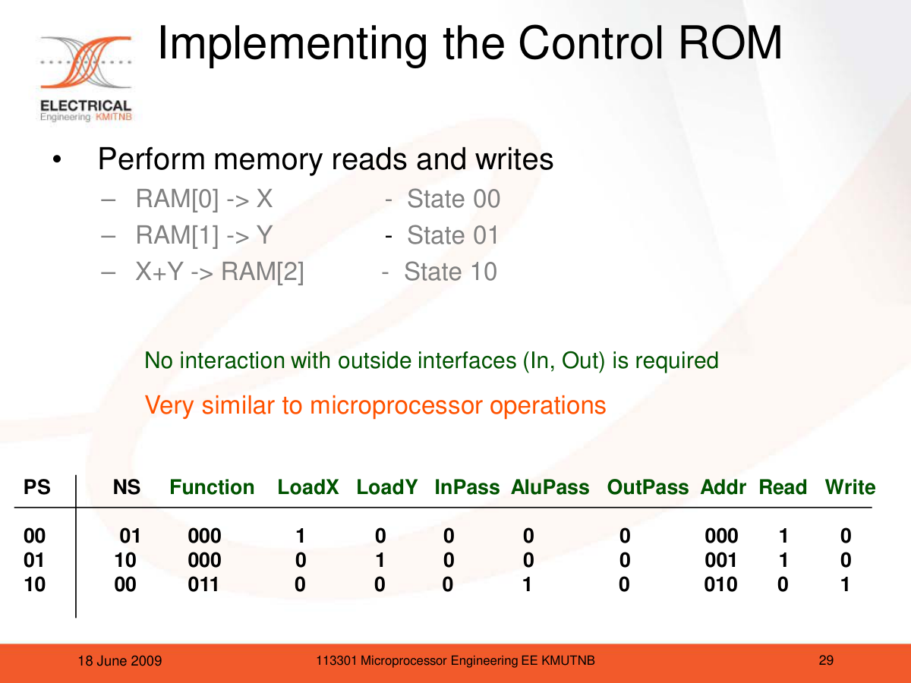
📌 อะไร (What):
สไลด์ที่ 29: สาระสำคัญเรื่อง 03. micro2_ALU.pdf — การออกแบบวงจรคำนวณและลอจิก (ALU 4-bit) และ Status Flags (เนื้อหาหลัก: Implementing the Control ROM • Perform memory reads and writes – RAM[0] -> X - State 00 – RAM[1] -> Y - State 01 – X+Y -> RAM[2] ...)
❓ ทำไม (Why):
การเข้าใจเนื้อหาในสไลด์ที่ 29 มีความสำคัญอย่างยิ่งในการสอบวิชา Embedded System เพื่อวิเคราะห์สถาปัตยกรรมและนำไปใช้ออกแบบฮาร์ดแวร์/เฟิร์มแวร์จริง
⚙️ ยังไง (How):
การทำงานในสไลด์ที่ 29 ประมวลผลผ่านสัญญาณดิจิทัล สัญญาณนาฬิกา (Clock) และโครงสร้างรีจิสเตอร์/บัสภายในระบบอย่างเป็นลำดับขั้นตอน
สไลด์ที่ 30 จาก 33
Slide #30
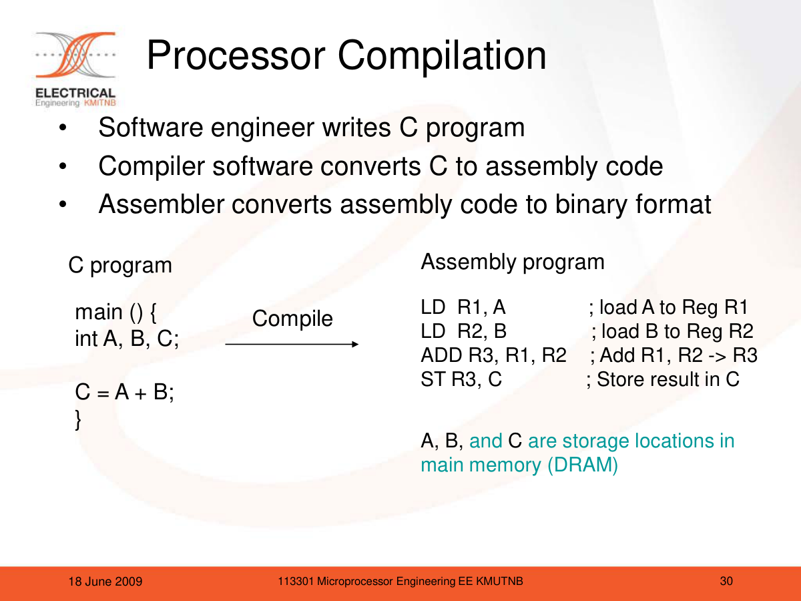
📌 อะไร (What):
สไลด์ที่ 30: สาระสำคัญเรื่อง 03. micro2_ALU.pdf — การออกแบบวงจรคำนวณและลอจิก (ALU 4-bit) และ Status Flags (เนื้อหาหลัก: Processor Compilation • Software engineer writes C program • Compiler software converts C to assembly code • Assembler converts assembly code to bina...)
❓ ทำไม (Why):
การเข้าใจเนื้อหาในสไลด์ที่ 30 มีความสำคัญอย่างยิ่งในการสอบวิชา Embedded System เพื่อวิเคราะห์สถาปัตยกรรมและนำไปใช้ออกแบบฮาร์ดแวร์/เฟิร์มแวร์จริง
⚙️ ยังไง (How):
การทำงานในสไลด์ที่ 30 ประมวลผลผ่านสัญญาณดิจิทัล สัญญาณนาฬิกา (Clock) และโครงสร้างรีจิสเตอร์/บัสภายในระบบอย่างเป็นลำดับขั้นตอน
💡 เฉลยคำตอบประเด็นประจำสไลด์ (Slide Question Answer):
คำตอบสำหรับประเด็นในสไลด์ที่ 30: การวิเคราะห์มโนทัศน์และข้อกำหนดเชิงวิศวกรรมของหัวข้อนี้ ช่วยให้เข้าใจหลักการทำงานและแก้โจทย์คำนวณในข้อสอบได้อย่างถูกต้อง
สไลด์ที่ 31 จาก 33
Slide #31
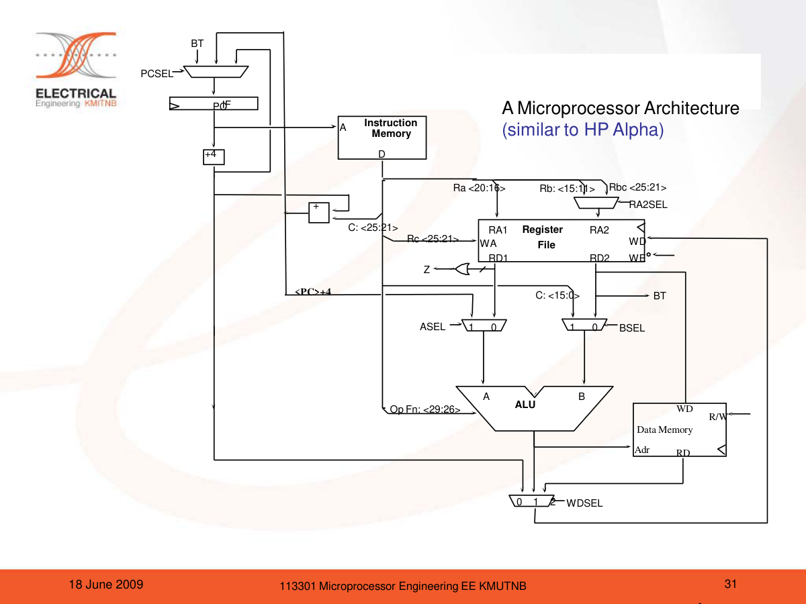
📌 อะไร (What):
สไลด์ที่ 31: สาระสำคัญเรื่อง 03. micro2_ALU.pdf — การออกแบบวงจรคำนวณและลอจิก (ALU 4-bit) และ Status Flags (เนื้อหาหลัก: Data Memory RD WD Adr R/W WDSEL 0 1 2 WA Rc <25:21> Y PCSEL PCIF BT +4 Instruction Memory A D Rb: <15:11> Ra <20:16> RA2SEL Rbc <25:21> + C: <25...)
❓ ทำไม (Why):
การเข้าใจเนื้อหาในสไลด์ที่ 31 มีความสำคัญอย่างยิ่งในการสอบวิชา Embedded System เพื่อวิเคราะห์สถาปัตยกรรมและนำไปใช้ออกแบบฮาร์ดแวร์/เฟิร์มแวร์จริง
⚙️ ยังไง (How):
การทำงานในสไลด์ที่ 31 ประมวลผลผ่านสัญญาณดิจิทัล สัญญาณนาฬิกา (Clock) และโครงสร้างรีจิสเตอร์/บัสภายในระบบอย่างเป็นลำดับขั้นตอน
สไลด์ที่ 32 จาก 33
Slide #32
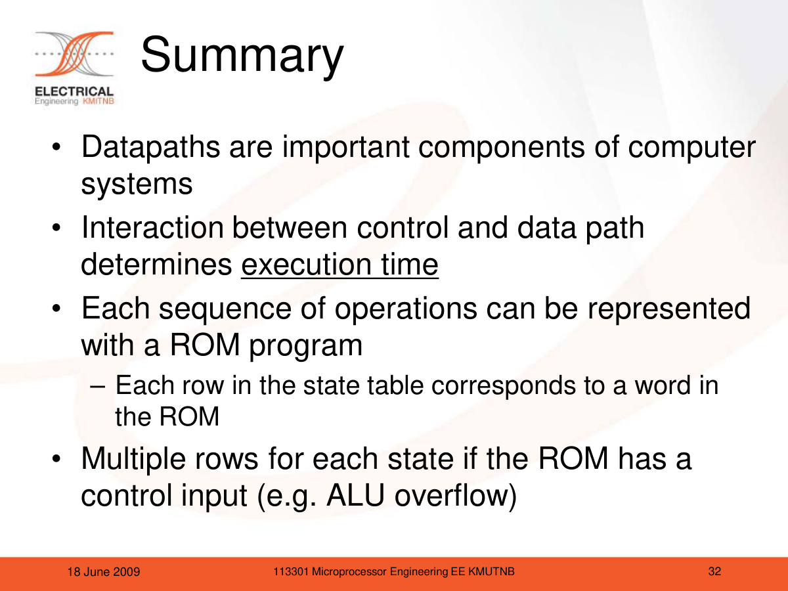
📌 อะไร (What):
สไลด์ที่ 32: สาระสำคัญเรื่อง 03. micro2_ALU.pdf — การออกแบบวงจรคำนวณและลอจิก (ALU 4-bit) และ Status Flags (เนื้อหาหลัก: Summary • Datapaths are important components of computer systems • Interaction between control and data path determines execution time • Each sequen...)
❓ ทำไม (Why):
การเข้าใจเนื้อหาในสไลด์ที่ 32 มีความสำคัญอย่างยิ่งในการสอบวิชา Embedded System เพื่อวิเคราะห์สถาปัตยกรรมและนำไปใช้ออกแบบฮาร์ดแวร์/เฟิร์มแวร์จริง
⚙️ ยังไง (How):
การทำงานในสไลด์ที่ 32 ประมวลผลผ่านสัญญาณดิจิทัล สัญญาณนาฬิกา (Clock) และโครงสร้างรีจิสเตอร์/บัสภายในระบบอย่างเป็นลำดับขั้นตอน
สไลด์ที่ 33 จาก 33
Slide #33

📌 อะไร (What):
สไลด์ที่ 33: สาระสำคัญเรื่อง 03. micro2_ALU.pdf — การออกแบบวงจรคำนวณและลอจิก (ALU 4-bit) และ Status Flags (เนื้อหาหลัก: หลักการและวงจรในสไลด์)
❓ ทำไม (Why):
การเข้าใจเนื้อหาในสไลด์ที่ 33 มีความสำคัญอย่างยิ่งในการสอบวิชา Embedded System เพื่อวิเคราะห์สถาปัตยกรรมและนำไปใช้ออกแบบฮาร์ดแวร์/เฟิร์มแวร์จริง
⚙️ ยังไง (How):
การทำงานในสไลด์ที่ 33 ประมวลผลผ่านสัญญาณดิจิทัล สัญญาณนาฬิกา (Clock) และโครงสร้างรีจิสเตอร์/บัสภายในระบบอย่างเป็นลำดับขั้นตอน
📝 แบบทดสอบวัดความเข้าใจหลังเรียนประจำไฟล์ที่ 3 (micro2_ALU.pdf)
📊 สรุปผลคะแนนปัจจุบัน: 0 / 3 ข้อ (กรุณาคลิกเลือกคำตอบในแต่ละข้อ)
ข้อที่ 1: สาระสำคัญและวัตถุประสงค์หลักของบทเรียนในไฟล์ micro2_ALU.pdf คือเรื่องอะไร?
ก. การเรียนรู้หลักการ สถาปัตยกรรม และการประยุกต์ใช้งานใน micro2_ALU.pdf
ข. การประมวลผลเครือข่ายอินเทอร์เน็ตความเร็วสูงเท่านั้น
ข้อที่ 2: เหตุใดการวิเคราะห์ระดับบิตและสัญญาณ Clock จึงมีความสำคัญในการศึกษาวิชานี้?
ก. เพื่อให้เข้าใจจังหวะการทำงานและการไหลของข้อมูลฮาร์ดแวร์ในระดับพินและรีจิสเตอร์
ข. สัญญาณ Clock ไม่มีผลต่อการบันทึกข้อมูลใน Flip-Flop
ข้อที่ 3: ข้อใดกล่าวถูกต้องเกี่ยวกับการเพิ่มประสิทธิภาพของระบบประมวลผลฝังตัว?
ก. การเลือกใช้สถาปัตยกรรมที่เหมาะสมร่วมกับการลดจำนวนเกตและไอซี ช่วยเพิ่มประสิทธิภาพและลดต้นทุน
ข. การเพิ่มจำนวนชิป IC บนบอร์ดให้ได้มากที่สุดโดยไม่สนต้นทุน